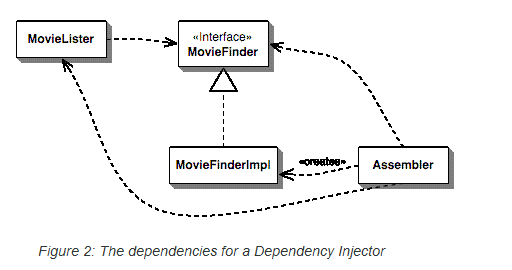
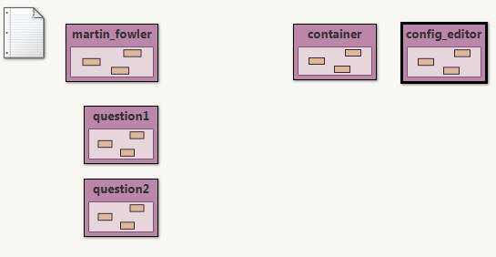
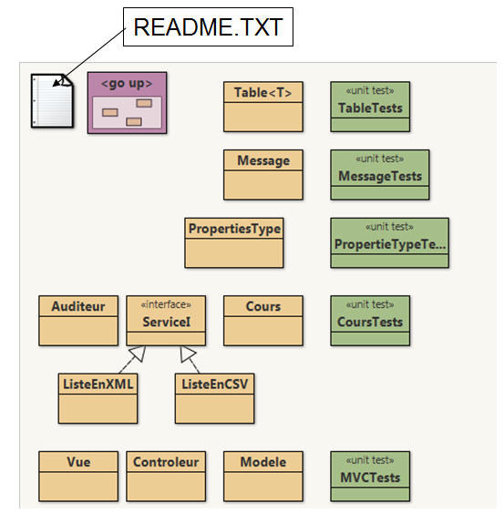
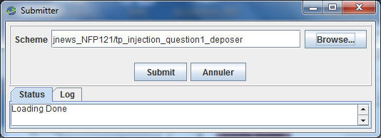

Le framework femtoContainer
Le framework femtoContainerPréambule: lire, étudier l'article de Martin Fowler
http://www.martinfowler.com/articles/injection.html
Ce TP est accompagné d'une séance d'exercices dirigés sur le même thème
cf. ed injection_dependances_IoC
Dans le paragraphe Setter Injection with Spring l'auteur, Martin Fowler, présente un exemple de configuration de classes à l'aide du framework Spring. L'exemple de l'article effectue une recherche d'un titre de film à l'aide du nom du réalisateur, la liste des films peut se présenter selon plusieurs formats: du fichier texte au format CSV ou avec d'autres séparateurs ou encore en base de données ou bien sur le web.

L'usage d'un framework de configuration, comme Spring, permet de s'affranchir du format de la liste des films, ce choix étant déterminé au moment de l'exécution depuis un fichier de configuration. Une séparation claire est ainsi effectuée entre la configuration des classes et leur utilisation.
Le fichier de configuration Spring est en XML (spring.xml) :
<beans>
<bean id="MovieLister" class="spring.MovieLister">
<property name="finder">
<ref local="MovieFinder"/> <-- ce sera un "bean" défini dans le même contexte </property> </bean> <bean id="MovieFinder" class="spring.ColonMovieFinder"> <-- le format du fichier est indiqué ici
<property name="filename">
<value>movies1.txt</value>
</property>
</bean>
</beans>
La lecture de ce fichier indique, que nous avons deux beans :
- MovieLister et MovieFinder
- dont les propriétés sont respectivement finder et filename
- les mutateurs(setter) associés sont exécutés par Spring : setFinder et setFilename, avec les paramètres indiqués.
En java, ci-dessous l'usage de Spring, extrait de l'article :
public void testWithSpring() throws Exception {
ApplicationContext ctx = new FileSystemXmlApplicationContext("spring.xml");
MovieLister lister = (MovieLister) ctx.getBean("MovieLister");
Movie[] movies = lister.moviesDirectedBy("Sergio Leone");
assertEquals("Once Upon a Time in the West", movies[0].getTitle());
}
Nous souhaitons utiliser un framework analogue, mais simplifié, développé pour cette unité, basé, comme Spring, sur l'injection de dépendances par les mutateurs(setter), les mêmes noms de classe ou d'interface ApplicationContext et noms de méthode getBean, getType ont été repris depuis Spring.
Dans la suite de cet énoncé, nous nommerons ce framework : femtoContainer.
Le projet Bluej associé au tp

le paquetage container contient femtoContainer, le paquetage config_editor un éditeur minimaliste de fichiers de configuration
Ci-dessous deux exemples avec femtoContainer, celui de l'article où l'on cherche toujours le film de Sergio Leone et un autre
exemple d'une table avec une capacité limitée, table dont le comportement est issu du fichier de configuration,
cette table peut comporter des doublons ou non.
Vous trouverez dans le projet BlueJ dans le paquetage question1 un exemple de patron commande dont le
choix des receveurs et des commandes concrètes est déterminé
dans la configuration.
Exemple (1) à la recherche d'un
réalisateur,
Un extrait de la classe de tests unitaires
package question1;
import java.util.*;
public class ApplicationContextTest extends junit.framework.TestCase{
public void testWithOurContainer() throws Exception{
ApplicationContext ctx = Factory.createApplicationContext();
MovieLister lister = ctx.getBean("MovieLister");
List<Movie> movies = lister.moviesDirectedBy("Sergio Leone");
assertEquals("Once Upon a Time in the West",movies.get(0).getTitle());
}
}
L'exemple de l'article, suivi du fichier de configuration
import java.util.*;
public class ColonMovieFinder implements MovieFinder {
private String filename;
public ColonMovieFinder() {
}
public void setFilename(String filename) {
this.filename = filename;
}
public List<Movie> findAll(){
List<Movie> list = new ArrayList<Movie>();
// la liste simulée extraite d'un fichier texte list.add(new Movie("Dans les forêts de Sibérie","NEBBOU Safy"));
list.add(new Movie("Demain","LAURENT Mélanie / DION Cyril"));
list.add(new Movie("Once Upon a Time in the West","Sergio Leone"));
return list;
}
public String toString(){
return "ColonMovieFinder";
}
}
__________________________________________________________________
import java.util.*;
public class MovieLister{
private MovieFinder finder;
public MovieLister() {
}
public void setFinder(MovieFinder finder) {
this.finder = finder;
}
public List<Movie> moviesDirectedBy(String arg) {
List<Movie> allMovies = finder.findAll();
for (Iterator<Movie> it = allMovies.iterator(); it.hasNext();) {
Movie movie = it.next();
if (!movie.getDirector().equals(arg)) it.remove();
}
return allMovies;
}
}
__________________________________________________________________
public interface MovieFinder {
List<Movie> findAll();
}
__________________________________________________________________
public class Movie{
private String title;
private String director;
public Movie(String title, String director){
this.title = title;
this.director = director;
}
public String getTitle(){
return title;
}
public String getDirector(){
return director;
}
}

Exemple (2) une table au comportement issu du fichier de configuration
(cf. README.TXT), ce fichier a été choisi pour sa présence en icône depuis
bluej Ci-dessous, le fichier de configuration, ici à l'aide d'un fichier de properties. # le fichier de configuration en xml, cf.
l'article de Martin Fowler # Adapté au properties de java le fichier de configuration # fichier question1.exemples.README.TXT Question Proposez un exemple d'utilisation de femtoContainer et la
classe de tests unitaires associée, vos exemples seront intégrés à la prochaine
version de cet énoncé.
import java.util.Collection;
public class Table<T>{
private Collection<T> liste;
private int capacite;
public Table(){}
public void setListe(Collection<T> liste){
this.liste = liste;
}
public void setCapacite(int capacite){
this.capacite = capacite;
}
public void ajouter(T t){
if(liste.size()==capacite) throw new RuntimeException("capacity reached");
liste.add(t);
}
public String toString(){
return liste.toString();
}
}package question1;
import java.util.*;
public class TestsTable extends junit.framework.TestCase{
public void testTableArrayList() throws Exception{
try{
ApplicationContext ctx = Factory.createApplicationContext("./question1/exemples/README.TXT");
Table<Integer> table = ctx.getBean("table");
table.ajouter(4);table.ajouter(2);table.ajouter(3);table.ajouter(1);
assertEquals("[4, 2, 3, 1]",table.toString());
try{
table.ajouter(5);
fail("Une exception doit être levée, la capacité de la table est atteinte...");
}catch(Exception e){
}
assertEquals(Table.class,ctx.getType("table"));
Table<Integer> table2 = ctx.getBean("table");
assertSame(table, table2);
}catch(Exception e){
fail("Exception inattendue :" + e.getMessage());
}
}
public void testTableArrayList2() throws Exception{
try{
ApplicationContext ctx = Factory.createApplicationContext("./question1/exemples/README.TXT");
Table<Integer> table = ctx.getBean("table2");
assertEquals(Table.class,ctx.getType("table2"));
table.ajouter(4);table.ajouter(2);table.ajouter(2);table.ajouter(1);
assertEquals("[4, 2, 2, 1]",table.toString());
try{
table.ajouter(5);
fail("Une exception doit être levée, la capacité de la table est atteinte...");
}catch(Exception e){
}
}catch(Exception e){
fail("Exception inattendue :" + e.getMessage());
}
}
public void testTableSet() throws Exception{
try{
ApplicationContext ctx = Factory.createApplicationContext("./question1/exemples/README.TXT");
Table<Integer> table = ctx.getBean("tableSet");
table.ajouter(4);table.ajouter(2);table.ajouter(2);table.ajouter(1);
assertEquals("[1, 2, 4]",table.toString());
try{
table.ajouter(3);
assertEquals("[1, 2, 3, 4]",table.toString());
table.ajouter(6);
fail("Une exception doit être levée, la capacité de la table est atteinte...");
}catch(Exception e){
}
assertEquals(Table.class,ctx.getType("table"));
}catch(Exception e){
fail("Exception inattendue :" + e.getMessage());
}
}
public void testContainerContent()throws Exception{
try{
ApplicationContext ctx = Factory.createApplicationContext("./question1/exemples/README.TXT");
List<String> liste = new ArrayList<String>();
for(String bean : ctx){
liste.add(bean);
}
assertTrue(liste.contains("MovieLister"));
assertTrue(liste.contains("MovieFinder"));
assertTrue(liste.contains("table"));
}catch(Exception e){
fail("Exception inattendue :" + e.getMessage());
}
}
public void testTabelSet2()throws Exception{
try{
ApplicationContext ctx = Factory.createApplicationContext("./question1/exemples/README.TXT");
Table<Integer> table = ctx.getBean("tableSet");
table.ajouter(4);table.ajouter(2);table.ajouter(2);table.ajouter(1);
assertEquals("[1, 2, 4]",table.toString());
ApplicationContext ctx2 = Factory.createApplicationContext();
Table<Integer> table2 = ctx2.getBean("tableSet");
table2.ajouter(4);table2.ajouter(2);table2.ajouter(2);table2.ajouter(1);
assertEquals("[1, 2, 4]",table2.toString());
table.ajouter(3);
assertEquals("[1, 2, 3, 4]",table.toString());
assertEquals("[1, 2, 4]",table2.toString());
}catch(Exception e){
fail("Exception inattendue :" + e.getMessage());
}
}
}
#<beans>
# <bean id="MovieLister" class="MovieLister">
# <property name="finder">
# <ref
local="MovieFinder"/>
# </property>
# </bean>
# <bean id="MovieFinder" class="ColonMovieFinder">
# <property name="filename">
#
<value>movies1.txt</value>
# </property>
# </bean>
#</beans>
# fichier martin_fowler.README.TXT
# MovieLister identifiant du bean
bean.id.1=MovieLister
# à quelle classe java ce bean est-il associé ?
MovieLister.class=martin_fowler.MovieLister
# Quelle propriété est à affecter, ici une seule
MovieLister.property.1=finder
# Le mutateur n'a qu'un paramètre
MovieLister.property.1.param.1=MovieFinder
bean.id.2=MovieFinder
MovieFinder.class=martin_fowler.ColonMovieFinder
MovieFinder.property.1=filename
MovieFinder.property.1.param.1=movies1.txt
bean.id.1=table
table.class=question1.exemples.Table
table.property.1=liste
table.property.1.param.1=listeArray
table.property.2=capacite
table.property.2.param.1=4
bean.id.2=listeArray
listeArray.class=java.util.ArrayList
bean.id.3=table2
table2.class=question1.exemples.Table
table2.property.1=liste
table2.property.1.param.1=listeLinked
table2.property.2=capacite
table2.property.2.param.1=4
bean.id.4=listeLinked
listeLinked.class=java.util.LinkedList
bean.id.5=tableSet
tableSet.class=question1.exemples.Table
tableSet.property.1=liste
tableSet.property.1.param.1=set
tableSet.property.2=capacite
tableSet.property.2.param.1=4
bean.id.6=set
set.class=java.util.TreeSet
L'interface ApplicationContext, contient les services proposés
par ce framework : N'oubliez pas d'utiliser JNEWS afin de déposer vos exemples, menu Outils,
item submit..., Scheme tp_injection_question1_deposer  public interface ApplicationContext extends Iterable<String>{
/** Obtention d'une instance d'un bean géré par le conteneur.
* Il n'existe qu'une seule instance avec cet id, c'est un singleton.
* @param id l'identifiant unique du bean
* @return l'instance associée ou null si cet identifiant est inconnu
*/
public Object getBean(String id);
/** Obtention du type du bean à partir de son identifiant.
* param id l'identifiant unique du bean
* @return le type du bean ou null
*/
public Class<?> getType(String id);
/** Obtention d'un itérateur sur les beans déjà créés.
* L'opération de retrait, méthode remove, est sans effet.
* @return un itérateur des identifiants du conteneur
*/
public java.util.Iterator<String> iterator();
}
 Utilisation du femtoContainer
et des patrons, contribution
Utilisation du femtoContainer
et des patrons, contribution
Les patrons de par leur structure se prêtent assez bien à cette séparation configuration/utilisation.
Question2-1) Proposez exemple d'utilisation conjointe d'un patron et de femtoContainer
- L'utilisation d'un patron http://jfod.cnam.fr/NFP121/supports/extras_designpatternscard.pdf sera privilégiée
- Vous pouvez aussi vous inspirer d'un exemple du web, en citant la source.
Utilisez JNEWS, item tp_inject_q2_contribuer, afin d'apporter votre contribution aux exemples de cet énoncé, vos exemples avec les tests unitaires associés feront partie de l'énoncé l'an prochain.
Montrez que seule la modification du fichier de configuration permet de changer le comportement d'une application utilisant ce patron
Question2-2) Vos deux exemples sont maintenant accessibles via une instance du patron ServiceLocator,
Modifiez la configuration (./service_locator/README.TXT) et enrichissez la classe de tests unitaires en conséquence (./service_locator/ServiceLocatorTests.java)...
N'oubliez pas d'utiliser JNEWS afin de déposer vos contribution, menu Outils, item submit..., Scheme tp_injection_question1_contribuer

Un exemple parmi bien d'autres possibles : L'usage du patron Observateur lors d'un changement d'état de la lampe
La classe Light et son observateur suivis d'un test de bon fonctionnement
package question1;
import java.util.Observable;
import java.util.Observer;
public class Light extends Observable implements Receiver{
private String state="Off";
public void setObserver(Observer obs){
this.addObserver(obs);
}
public void on(){
if("Off".equals(getState())){
state = "On";setChanged();notifyObservers();
}
}
public void off(){
if("On".equals(getState())){
state = "Off";setChanged();notifyObservers();
}
}
public String getState(){return state;}
}
_________________________________________________________
package question1;
import java.util.*;
public class LightObserver implements Observer{
public int compte;
public void update(Observable o, Object obj){
compte++;
}
}
public void testLightObserver()throws Exception{
try{
ApplicationContext ctx = Factory.createApplicationContext();
Invoker invoker = ctx.getBean("invoker");
Receiver receiver = ctx.getBean("lampe");
LightObserver observer = ctx.getBean("observateur");
assertEquals("Off", receiver.getState());
invoker.on();
assertEquals(1,observer.compte);
invoker.off();invoker.on();
assertEquals(3,observer.compte);
}catch(Exception e){
fail("Exception inattendue :" + e.getMessage());
}
}
# le fichier de configuration
bean.id.12=lampe
lampe.class=question1.Light
lampe.property.1=observer
lampe.property.1.param.1=observateur
bean.id.13=observateur
observateur.class=question1.LightObserver
 Optionnelle contribution
Optionnelle contributionFemtoContainer est bien entendu perfectible, tout ajout, toutes modifications sont les bienvenus et seront intégrés, à l'outil pour l'an prochain.
Les traces en mode verbeux, l'exécution possible par introspection de n'importe quelle méthode, la gestion des erreurs issue d'un fichier de configuration erroné pourrait être ajoutées ou améliorées.
Un autre format du fichier de configuration XML, JSON ... peut être proposé. L'interface graphique engendrant le fichier de configuration XMLou JSON pourrait elle aussi être enrichie ou réécrite.
JSON : à l'aide de cette librairie par exemple,
voir
https://www.jmdoudoux.fr/java/dej/chap-gson.htm